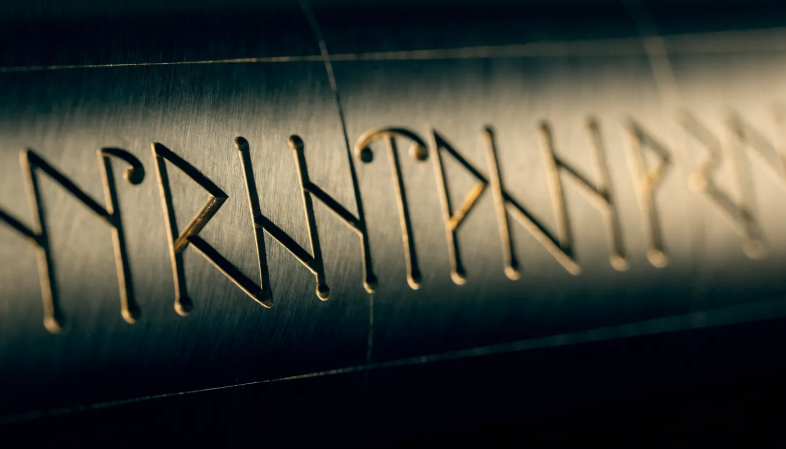

Distributed manufacturing under controlled engineering.
Forge is the architecture for coordinating physical execution across Asgard capability, qualified suppliers, specialized processes, assembly and integration locations, inspection and test resources, logistics, and repair, all working against one released engineering definition, one quality standard, and one configuration. The network is being built out now.
From engineering release to delivered configuration.
Forge starts from a released, controlled technical definition. Launchbelt decomposes it; Forge executes it.
Engineering Release
A controlled technical definition, with requirements, drawings, models, and quality gates, released for execution.
Launchbelt Work Package
The release decomposed into coordinated work packages, each carrying its requirements, compliance gates, and acceptance criteria. Explore Launchbelt →
Forge Capability Routing
Each work package routed to the right capability: Asgard capability, qualified suppliers, or specialized processes, matched on the merits of the work.
Manufacturing Nodes
Machining, composites, thermoplastics, fabrication, additive, and electrical assembly executed against the released definition.
Integration + Inspection + Test
Assemblies brought together, inspected, and verified, with evidence captured against the requirements they close.
Delivered Configuration
Hardware delivered with full genealogy: a complete, traceable configuration.
One standard across every node.
Every node in the network, internal or external, executes released work under the same controlled engineering, quality, and configuration discipline.
Make. Assemble. Prove. Move. Restore.
Manufacturing
Asgard capability, qualified suppliers, and specialized processes: machining, composites, thermoplastics, fabrication, additive.
Assembly & Integration
Assembly and integration resources bringing subsystems together into one operational configuration.
Inspection & Test
Inspection and test resources generating the acceptance evidence the configuration requires.
Logistics
Controlled movement of material, assemblies, and hardware between nodes and to the point of use.
Repair & Sustainment
Repair and sustainment nodes keeping deployed systems mission-ready through their operational life.
Capabilities Across The Network


Put Forge behind your program.
Forging Brilliance, Destined by Design.